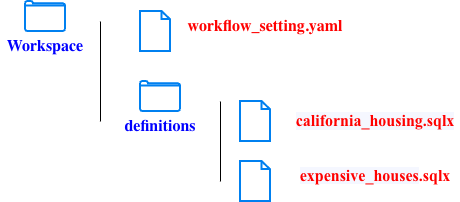
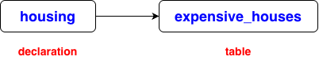
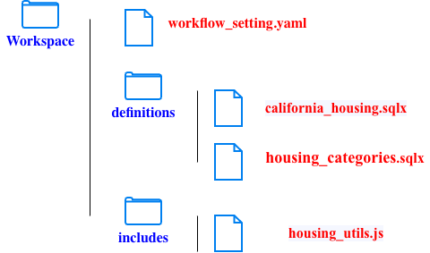
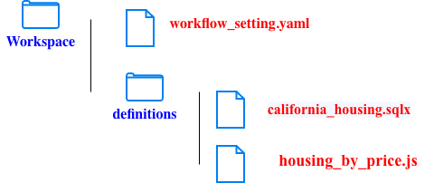

# workflow_setting.yaml
defaultProject: data-508912
defaultDataset: test
defaultLocation: US
defaultAssertionDataset: dataform_assertions
dataformCoreVersion: "3.0.43"
/* definitions.sources.california_housing.sqlx */
config {
type: "declaration",
database: "data-508912",
schema: "test",
name: "housing"
}
/* definitions.expensive_houses.sqlx */
config {
type: "table"
}
js {
const minPrice = 500000;
}
SELECT *
FROM ${ref("housing")}
WHERE median_house_value > ${minPrice}

/* definitions.filtered_housing.sqlx */
config {
type: "table",
schema: "test"
}
SELECT *
FROM ${ref("housing")}
WHERE median_house_value >= ${housing_utils.MIN_PRICE}
AND median_house_value < ${housing_utils.MAX_PRICE}
AND median_income >= ${housing_utils.MIN_INCOME}
/* includes.housing_utils.js */
// Reusable variables
const MIN_PRICE = 250000;
const MAX_PRICE = 1000000;
const MIN_INCOME = 5;
// Reusable function: classify house prices
function priceCategory(column) {
return `
CASE
WHEN ${column} >= 500000 THEN 'High'
WHEN ${column} >= 250000 THEN 'Medium'
ELSE 'Low'
END
`;
}
// Reusable function: generate price filter
function priceFilter(column, min, max) {
return `
${column} >= ${min}
AND ${column} < ${max}
`;
}
// Export variables and functions
module.exports = {
MIN_PRICE,
MAX_PRICE,
MIN_INCOME,
priceCategory,
priceFilter
}; // makes the function available to other files.

/* definitions.housing_by_price.js */
const categories = [
{ name: "high", min: 500000, max: 1000000 },
{ name: "medium", min: 250000, max: 500000 },
{ name: "low", min: 0, max: 250000 }
];
categories.forEach(category => {
publish(`housing_${category.name}`, {
type: "table"
}).query(ctx => `
SELECT *
FROM ${ctx.ref("housing")}
WHERE median_house_value >= ${category.min}
AND median_house_value < ${category.max}
`);
});